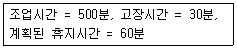
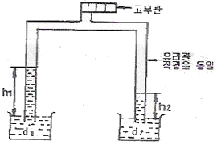
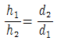
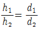
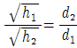
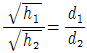
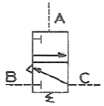

설비보전기능사 (2013-01-27 기출문제)
1과목: 기계보전 일반(대략구분)
1. 단면도에 대한 설명으로 잘못 된 것은?
- 온 단면도는 물체의 중심에서 반으로 절단하여 도시한다.
- 한쪽 단면도는 주로 대칭인 물체의 중심선을 기준으로 내부모양과 외부모양을 동시에 나타낸 것이다.
- 회전 단면도는 핸들이나 바퀴의 암, 리브, 축 등의 단면모양을 90° 회전시켜서 투상도의 안이나 밖에 그리는 것이다.
- 박판, 형강 등과 같이 절단면이 얇은 경우에는 절단면을 검게 칠하거나 2개의 아주 굵은 실선으로 표시한다.
(정답률: 76%)

2. 다음 측정기 중 직접 측정기로 맞는 것은?
- 다이얼 게이지
- 측장기
- 옵티미터
- 전기 마이크로미터
(정답률: 74%)
3. 순환펌프를 이용하는 윤활제의 급유방법은?
- 핸드 급유법
- 오일링 급유법
- 강제 순환 급유법
- 담금 급유법
(정답률: 84%)
4. 펌프에서 압력이 국부적으로 낮아져서 기포가 생겨 소음과 진동을 일으키게 되는 현상은?
- 보일링(boiling)
- 캐비테이션(cavitation)
- 서징(surging)
- 채터링(chattering)
(정답률: 73%)
5. 한쪽 끝이 두 가닥으로 갈라진 핀으로 축에 끼워진 부품이 빠지는 것을 막고, 핀을 때려 넣은 뒤 끝을 굽혀서 늦춰지는 것을 방지하는 핀은?
- 스프링 핀
- 분할 핀
- 테이퍼 핀
- 평행 핀
(정답률: 78%)
6. 물체 앞에서 바라본 모양을 도면에 나타낸 것으로 그 물체의 가장 주된 면을 나타내는 투상도는?
- 평면도
- 정면도
- 측면도
- 저면도
(정답률: 94%)
7. 임펠러의 진동발생시 임펠러에 시편을 붙여 진동을 교정하는 작업방법은?
- 플러링 작업
- 밸런싱 작업
- 센터링 작업
- 코오킹 작업
(정답률: 83%)
8. 관속을 흐르는 유체의 종류를 표시하는 경우에는 문자나 기호로서 표시한다. 유체 종류와 문자기호가 올바르게 표시된 것은?
- 공기 - A
- 가스 - S
- 증기 - W
- 기름 - G
(정답률: 90%)
9. 감속기의 점검 항목 - 점검 방법 - 판단 기준으로 틀린 것은?
- 윤활유 량 - 유면계의 위치 확인 - 상·하한선 사이에 위치할 것
- 이상 음, 진동, 발열 - 촉수, 청음봉 사용 - 진동, 이상 음, 발열이 없을 것
- 입·출력 원동측과 부하측의 중심 - 다이얼게이지, 직선자 사용 - 어긋남이 없을 것
- 축이음 상태 - 입·출력 축의 중심선 - 발열만 없으면 될 것
(정답률: 85%)
10. 밀봉장치에 사용되는 오링(O-ring)의 구비조건으로 틀린 것은?
- 누설을 방지하는 기구에서 탄성이 양호할 것
- 가급적 사용온도 범위가 좁을 것
- 내마모성을 포함한 기계적 성질이 좋을 것
- 상대 금속을 부식시키지 말 것
(정답률: 84%)
11. 장치 공업에서 각 장치의 배치, 제조공정의 관계 등을 나타낸 도면은 어느 것인가?
- 장치도
- 배근도
- 부품도
- 조립도
(정답률: 72%)
12. 구부러진 축을 수정할 수 있는 공구는?
- 커플링
- 짐 크로우
- 임팩트 렌치
- L-렌치
(정답률: 91%)
13. 기어 이의 면 열화현상 중 표면피로에 해당하는 현상은?
- 피이닝 항복
- 초기 피칭
- 스코어링
- 절손
(정답률: 60%)
14. 축 고장의 원인 중 설계 불량에 해당하는 것은?
- 재질 불량
- 풀리. 기어, 베어링 등의 끼워맞춤 불량
- 휜 축 사용
- 급유 불량
(정답률: 49%)
15. 설비계획이 행해지는 때에 대한 것으로 틀린 것은?
- 설계 변경이나 생산규모를 변경할 경우
- 기존사업을 계속 유지할 경우
- 확장에 따라 공장을 증설할 경우
- 제품의 품종을 변경할 경우
(정답률: 78%)
16. 다음 중 왕복식 압축기의 단점이 아닌 것은?
- 설치 면적이 넓다.
- 윤활이 어렵다.
- 고압 발생이 불가능하다.
- 압력의 맥동이 있다.
(정답률: 78%)
17. 다음 중 2개의 마찰면이 직접 접촉하는 일 없이 비교적 두꺼운 연속적인 유막과 그 압력에 의해서 완전히 격리되어 있는 상태의 마찰은?
- 건조마찰
- 경계마찰
- 유체마찰
- 고체마찰
(정답률: 59%)
18. 밸브에 대한 설명으로 틀린 것은?
- 글로브밸브는 유체의 입구와 출구의 흐름방향이 같지 않고, 직각으로 바뀌는 구조로 되어 있다.
- 체크밸브는 유체를 한 방향으로만 흘러가게 한다.
- 안전밸브는 유체가 제한된 최고압력을 초과하였을 때 유체를 외부로 방출하는 밸브이다.
- 감압밸브는 고압유체를 보다 낮은 압력으로 감압하고, 일정하게 유지하는 경우에 쓰인다.
(정답률: 75%)
19. 설비의 운전조건 및 조작방법에 의해 발생되는 성능 열화로 맞는 것은?
- 사용열화
- 자연열화
- 재해열화
- 절대열화
(정답률: 80%)
20. 윤활유의 열화방지 대책으로 틀린 것은?
- 윤활유가 고온부에 접촉하는 시간을 짧게 하고 유온을 일정하게 유지한다.
- 윤활유 내부의 슬러지 성분을 신속하게 제거한다.
- 윤활유 교환시 적정한 점도 유지를 위하여 윤활유를 혼합하여 사용한다.
- 교환 시는 열화유를 완전히 제거한다.
(정답률: 84%)
2과목: 설비관리(대략구분)
21. 나사의 도시 방법으로 옳은 것은?
- 암나사의 골지름은 굵은 실선으로 그린다.
- 수나사의 바깥지름은 굵은 실선으로 그린다.
- 완전나사부와 불완전 나사부의 경계는 가는 실선으로 그린다.
- 수나사와 암나사의 조립부를 그릴 때는 암나사를 기준으로 그린다.
(정답률: 59%)
22. 제동장치로 사용되는 것은?
- 클러치
- 완충기
- 커플링
- 브레이크
(정답률: 90%)
23. 진동이 있는 차량, 항공기 등의 체결용 요소의 풀림 방지 및 가스, 액체가 누설되는 것을 막기 위해서도 사용되며, 침투성이 좋고 경화한 후 무게가 감량되지 않으며 일단 경화되면 유류, 소금물, 유기 용제에 대하여 내성이 우수한 접착제는?
- 유화액(emulsion)형 접착제
- 혐기형 접착제
- 금속 구조용 접착제
- 중합제(prepolymer)형 접착제
(정답률: 62%)
24. 다음 중 금속가공용 윤활유가 아닌 것은?
- 절삭유
- 연삭유
- 열처리유
- 방청그리스유
(정답률: 71%)
25. 공장설비란 넓은 뜻에서 건물을 비롯하여 부대시설, 방재설비, 운반설비 등으로 분류할 수 있다. 그 중 부대시설에 포함되지 않는 것은?
- 안전설비
- 급수설비
- 배수설비
- 난방설비
(정답률: 65%)
26. 어떤 설비에 대한 시간가동률을 산출하려고 한다. 지난 1주간의 설비가동 현황은 다음과 같다. 지난 1주간의 시간가동률은 약 몇 % 인가?

- 93.2%
- 90.5%
- 88.2%
- 82.0%
(정답률: 66%)
27. 공사관리의 목적에 대한 것으로 가장 적합한 것은?
- 조업상 요구에 의해 하는 계량공사 지원
- 보전상 요구에 의해서 하는 수리 지원
- 설비에 투입되는 비용을 최소화
- 검사에 의하여 필요한 수리를 최소화
(정답률: 73%)
28. 보전작업 표준화란 보전작업의 낭비를 제거하여 효율성을 증대시키기 위한 것이다. 표준화할 보전작업의 대상은 여러 가지가 있다. 보전표준의 종류가 아닌 것은?
- 작업표준
- 수리표준
- 일상점검표준
- 자재표준
(정답률: 65%)
29. 열관리의 방법 중에서 열사용의 효율을 높이기 위해 공장 내에서 1차 목적을 위해서 사용된 후의 열 혹은 수송 중에 새어 나오는 열을 2차 목적에 사용하기 위해 하는 것은?
- 연료관리
- 배열(폐열)회수
- 연소관리
- 열사용 관리
(정답률: 64%)
30. 듀폰방식의 보전효과 측정요소 중 생산성의 요소는 무엇인가?
- 노동효율
- 계획 달성률
- 설비 투자에 대한 보전비의 비율
- 월당 총 공수에 대한 예방보전 비율
(정답률: 54%)
3과목: 공유압 일반(대략구분)
31. 설비관리를 통해 달성할 수 있는 것 중 옳지 않은 것은?
- 납기준수
- 신뢰성 향상
- 안정성 향상
- 유지비용 증가
(정답률: 82%)
32. 품질확보를 위해서 품질 보전의 전개 순서가 있다. 추진 순서가 올바른 것은?
- 현상분석 → 목표설정 → 요인해석 → 표준화 → 개선 및 실시
- 목표설정 → 현상분석 → 요인해석 → 표준화 → 개선 및 실시
- 목표설정 → 현상분석 → 요인해석 → 개선 및 실시 → 표준화
- 현상분석 → 목표설정 → 요인해석 → 개선 및 실시 → 표준화
(정답률: 62%)
33. 치공구 공장의 생산형태로 가장 적합한 것은?
- 소품종다량 생산
- 다품종다량 생산
- 다품종소량 생산
- 중품종중량 생산
(정답률: 58%)
34. 만성로스의 원인을 과학적 사고로 인과성을 밝혀 바람직한 원리 및 원칙을 수립하여 필요한 대책을 강구하는 분석 방법은?
- PM 분석
- 보전 분석
- 파레토 분석
- 관리도 분석
(정답률: 71%)
35. TPM은 여러 가지 측면에서 전통적인 관리시스템과 차이점이 많다. TPM을 설명한 내용 중 틀린 것은?
- 사전활동 중심
- 로스(loss) 측정
- output 지향
- 불량발생원 제거
(정답률: 72%)
36. 설비를 목적에 따라 분류하였을 때 관리설비의 종류에 해당되지 않는 것은?
- 본사의 건물
- 공장의 보조설비
- 서비스 스테이션
- 복리후생설비
(정답률: 55%)
37. 전 보전요원이 한 사람의 보전책임자 밑에 조직되어 지휘 감독을 받아 긴급작업, 고장을 신속히 처리하고, 새로운 일에 대한 통제가 보다 확실한 특징을 가지고 있는 설비 보전 조직은?
- 지역보전
- 부문보전
- 절충보전
- 집중보전
(정답률: 76%)
38. 설비보전에 대한 설명으로 맞는 것은?
- 개량보전을 일명 예지보전이라고도 한다.
- 보전예방은 설비의 특정 운전조건을 유지하기 위해 수행되는 모든 계획보전의 전형적인 보전활동이다.
- 사후보전은 중점설비를 대상으로 설비 가동 중 또는 중지 이후 비가동시간을 유발시켜 보전을 시행한다.
- 상태기준보전은 설비의 잠재 열화현상에 대한 정확한 상태를 예측하기 위하여 직접 설비를 감지하는 방법이다.
(정답률: 38%)
39. 측정자가 계측대상에 접근하지 않고 간접적으로 측정하는 경우 사용하며 일반적으로 검출부, 지시부, 기록부, 경보부, 조절부로 구성되어 있는 계측기는?
- 원격측정식 계측기
- 현장작업용 계측기
- 관리작업용 계측기
- 직접측정식 계측기
(정답률: 81%)
40. 유압 실린더의 지지형식 중 요동형으로만 짝지어진 것은?
- 풋형, 플랜지형
- 풋형, 트러니언형
- 플랜지형, 크레비스형
- 트러니언형, 크레비스형
(정답률: 48%)
41. 유량제어 밸브 중에서 압력 보상이 되는 것은?
- 스톱 밸브
- 니이들 밸브
- 유량 조정 밸브
- 스로틀 밸브
(정답률: 72%)
42. 펌프 무부하회로의 특징으로 틀린 것은?
- 펌프의 수명을 연장시킨다.
- 동력이 절감된다.
- 유온의 상승을 방지한다.
- 장치의 효율을 감소시킨다.
(정답률: 70%)
43. 다음 그림과 같은 밀도가 각각 d1, d2인 액체관에 유리관을 넣고 고무관을 통하여 공기를 빼면 각 액체가 h1, h2의 높이까지 올라간다. 이 관계가 옳게 표현된 것은?





(정답률: 59%)
44. 공기압 발생 장치 중 압축된 공기를 냉각하여 수분을 제거하는 장치는?
- 공기 압축기
- 공기 냉각기
- 공기 조정유닛
- 공기 필터
(정답률: 81%)
45. 유압제어밸브 중 출구가 고압측 입구에 자동적으로 접속되는 동시에 저압측 입구를 닫는 작용을 하는 밸브는?
- 셀렉터 밸브
- 셔틀 밸브
- 바이패스 밸브
- 체크 밸브
(정답률: 59%)
46. 유압유에 요구되는 성질이 아닌 것은?
- 넓은 온도범위에서 점도변화가 적을 것
- 장시간 사용하여도 화학적으로 안정될 것
- 방열성이 좋을 것
- 압축성이 좋을 것
(정답률: 61%)
47. 공압 실린더의 출력결정에 관계가 없는 것은?
- 실린더 튜브의 내경
- 실린더의 재질
- 실린더의 추력효율
- 사용공기 압력
(정답률: 73%)
48. 도면에서 조작방식 A와 입력신호 B가 모두 충족될 때 출력 C가 나오는 회로의 이름은 무엇인가?

- OR 회로
- AND 회로
- NOT 회로
- NOR 회로
(정답률: 72%)
49. 유압장치의 기본 구성 요소인 동력원의 설명과 거리가 먼 것은?
- 유압 에너지를 발생하는 곳이다.
- 유압 펌프와 유압 탱크가 해당된다.
- 심장에서 혈액을 공급하는 것과 같다.
- 일의 출력, 속도, 방향을 제어하는 역할을 한다.
(정답률: 68%)
50. 관 이음방식에서 나사 끼우기형 이음을 압력 배관에 사용할 경우 허용되는 적당한 압력은?
- 70kgf/cm2
- 150kgf/cm2
- 200kgf/cm2
- 250kgf/cm2
(정답률: 50%)
4과목: 산업안전(대략구분)
51. 공기압 회로에서 실린더나 기타의 액추에이터로 공급되는 압축 공기의 흐름 방향을 변환시키는 밸브는?
- 압력제어 밸브
- 유량제어 밸브
- 방향제어 밸브
- 릴리프 밸브
(정답률: 80%)
52. 공기압 도면기호에서 기체의 흐름 방향을 나타내는 기호로 맞는 것은?
- ▷
- ○
- ●
- ▶
(정답률: 79%)
53. 주 회로의 압력을 일정하게 유지하면서 압력의 축압상태에 따라 조작을 순차적으로 제어할 수 있는 것은?
- 언로드 밸브
- 체크 밸브
- 차단 밸브
- 시퀀스 밸브
(정답률: 77%)
54. 수공구의 보관 방법으로 적합하지 않은 것은?
- 사용한 수공구는 방치하지 말고 소정의 보관장소에 보관한다.
- 날이 있거나 끝이 뾰족한 물건은 위험하므로 뚜껑을 씌워 둔다.
- 회전 숫돌은 수분이나 습기가 있는 곳에 보관한다.
- 회전 숫돌을 보관 중 금이 가거나 결손이 생기면 파열될 위험이 있으므로 전용 정리대나 상자에 보관한다.
(정답률: 86%)
55. 산업안전보건법상 관리감독자 정기안전보건 교육시간은?
- 연간 10시간
- 월 1시간
- 반기 6시간
- 연간 16시간 이상
(정답률: 68%)
56. 안전·보건표지의 종류별 형태 및 색채에 대한 내용으로 틀린 것은?
- 금지표지 : 바탕은 흰색, 기본모형은 빨간색
- 경고표지 : 바탕은 빨간색, 기본모형은 노란색
- 지시표지 : 바탕은 파란색, 관련그림은 흰색
- 안내표지 : 바탕은 흰색, 기본모형은 녹색 또는 바탕은 녹색, 관련 그림은 흰색
(정답률: 58%)
57. 사다리식 통로에 대한 설명으로 틀린 것은?
- 재료는 부식이 없는 것으로 한다.
- 폭은 15cm 이상으로 한다.
- 견고한 구조로 한다.
- 사다리 밑에는 미끄럼 방지를 한다.
(정답률: 86%)
58. 산업안전 실천의 효과로 적합하지 않은 것은?
- 생산재의 손실을 축소시킬 수 있다.
- 생산성을 감소시킬 수 있다.
- 인명 피해를 예방할 수 있다.
- 사업설비의 손실을 감소시킬 수 있다.
(정답률: 82%)
59. 가스용접 시 역화현상의 원인이 아닌 것은?
- 용접봉의 예열온도 부적당
- 팁 구멍에 이물질 부착
- 팁의 과열
- 팁과 모재의 접촉
(정답률: 55%)
60. 연삭기 사용시의 안전사항으로 옳지 않은 것은?
- 연삭기를 사용할 때에는 방진마스크와 보안경을 착용한다.
- 숫돌과 받침대의 간격은 3mm 이하로 유지한다.
- 숫돌커버가 작업에 방해가 될 때는 떼어내고 작업한다.
- 숫돌은 장착하기 전에 균열이 없는가를 점검한다.
(정답률: 82%)